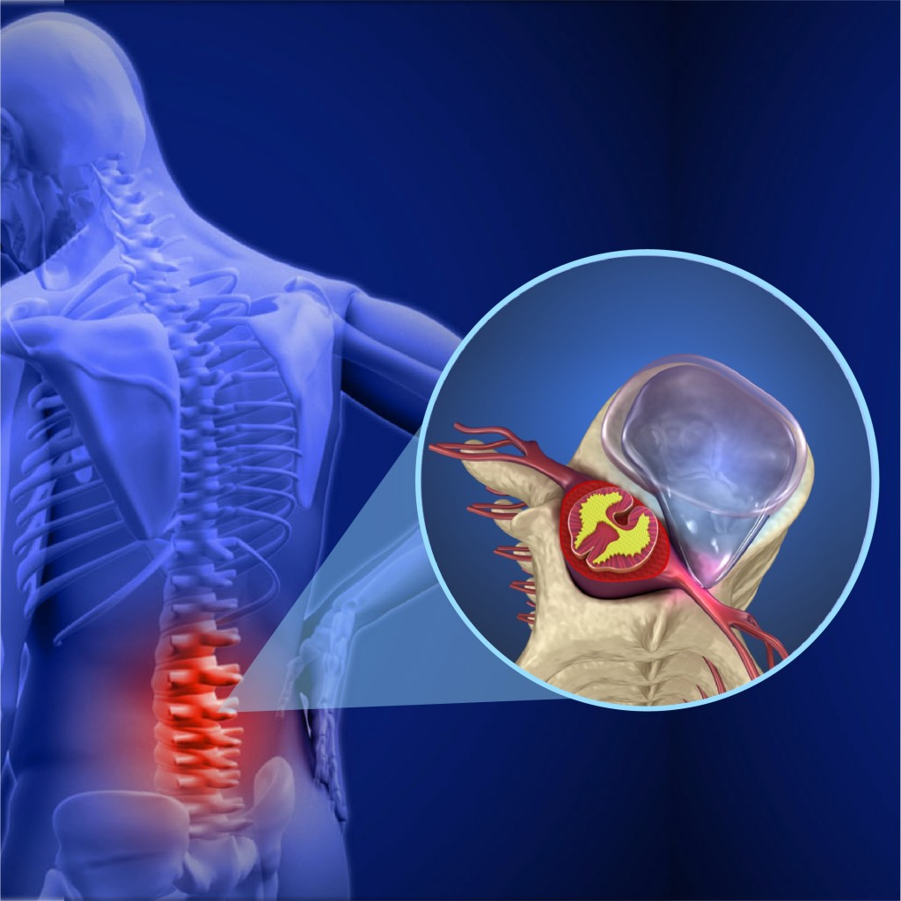

Hérnia de disco: conheça a doença que faz parte da vida de mais de 5,2 milhões de brasileiros.
O que é?
Hérnia quer dizer "qualquer estrutura que se deslocou", e o disco é uma espécie de amortecedor entre os ossos da coluna, as vértebras. Ele é quem absorve o impacto das vértebras e permite que movimentamos nossa coluna. É formado por uma capa de fibras, e composto por um gel rico em água. Devido a diversos fatores, o disco pode vir a desidratar, ficando mais rígido e menos resistente, ele obtém diversas fissuras, que é onde se origina a dor causa pela hérnia de disco, pois o disco está machucado.
Além disso, o gel presente no disco acaba escapando pelas fissuras e fazendo uma compreensão nos nervos da coluna, causando a radiculopatia, que é a dor que se estende para os braços e pernas.
As causas são diversas, entre elas:
- Sedentarismo
- Tabagismo
- Obesidade
- Má postura
- Genética
- Traumas
- Atividade física inadequada
Diferenças entre Hérnia de Disco e Bico de Papagaio.
Como vimos anteriormente, a hérnia de disco envolve os discos que ficam entre as vértebras, já o bico de papagaio é um desgaste na coluna onde acaba formando uma estrutura óssea entre as vértebras, e ao fazer o exame de raio X, é possível ver que essa estrutura possui o formato de um bico de papagaio.
Sintomas
A dor é o principal sintoma, e geralmente esse episódio de dor é tão traumático que o paciente lembra. A dor vai evoluindo entre diversas crises, depois passa a ser contínua.
Dentre os sintomas também pode haver radiculopatia nos braços e pernas, dor abdominal atípica, formigamento, perda de sensibilidade, perda de força, dor testicular, alterações vaginas, entre outros.
Tratamentos
Por se tratar de doença bastante incapacitante, o diagnóstico tem que ser feito a partir dos primeiros sintomas. Fazendo esse diagnóstico precoce, há uma chance maior de fazer o tratamento sem precisar de cirurgia.
Se o desgaste do disco estiver no estágio inicial, você pode tratar fazendo uma alteração nos hábitos de vida, perda de peso, atividade física regular, alongamento de cadeia posterior, fortalecimento de core, e inúmeras medidas que você pode tomar de maneira gradual para entardecer a evolução da doença. Estas medidas combinadas com o tratamento com medicamentos pode trazer a melhora do problema nas primeiras 6-12 semanas.
Nos casos mais graves, será preciso o tratamento cirúrgico que acaba rapidamente com os sintomas ocasionados pela inflamação e compressão dos nervos afetados, são eles: Discectomia Cervical Anterior com Fusão (DCAF), que tem como função aliviar a dor causada pela pressão nas raízes nervosa e/ou na medula espinhal por um disco ou material ósseo localizado no pescoço;
⁵ Uma pequena incisão feita à frente do pescoço.
e Foraminotomia Cervical Posterior (FCP), que é uma alternativa à DCAF e alivia os sintomas de um nervo comprimido.